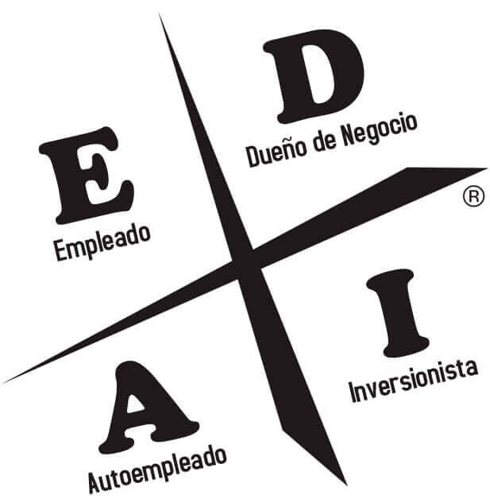
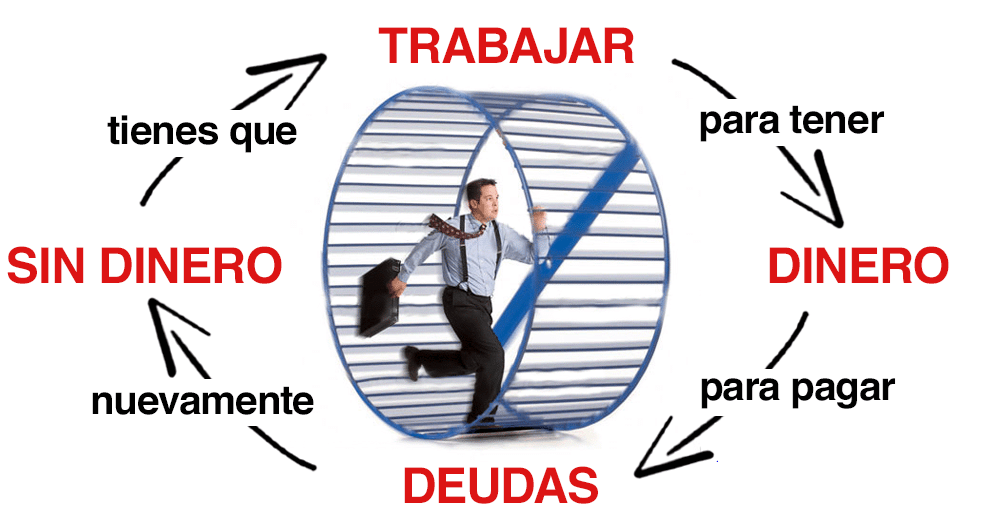

"La razón principal por la cual las personas tienen dificultades financieras es porque han pasado años en los colegios, pero no aprendieron nada acerca del dinero. El resultado es que la gente aprende a trabajar por dinero... pero nunca aprende a tener dinero trabajando para ellos". | Robert T. Kiyosaki
"Padre Rico, Padre Pobre" ofrece una perspectiva única sobre la educación financiera y la mentalidad para alcanzar la independencia económica. A través de las experiencias de dos figuras paternas contrastantes, Robert Kiyosaki, autor del libro, destaca las diferencias entre la mentalidad de un padre que trabaja por seguridad financiera (Padre Pobre) y la de otro que busca la libertad financiera a través de la inversión y el emprendimiento (Padre Rico).
En este libro, te esperan numerosas lecciones valiosas que te motivarán a desarrollar una mentalidad financiera sólida, permitiéndote tomar decisiones inteligentes para alcanzar la independencia económica.

"El cuadrante del flujo de dinero"
